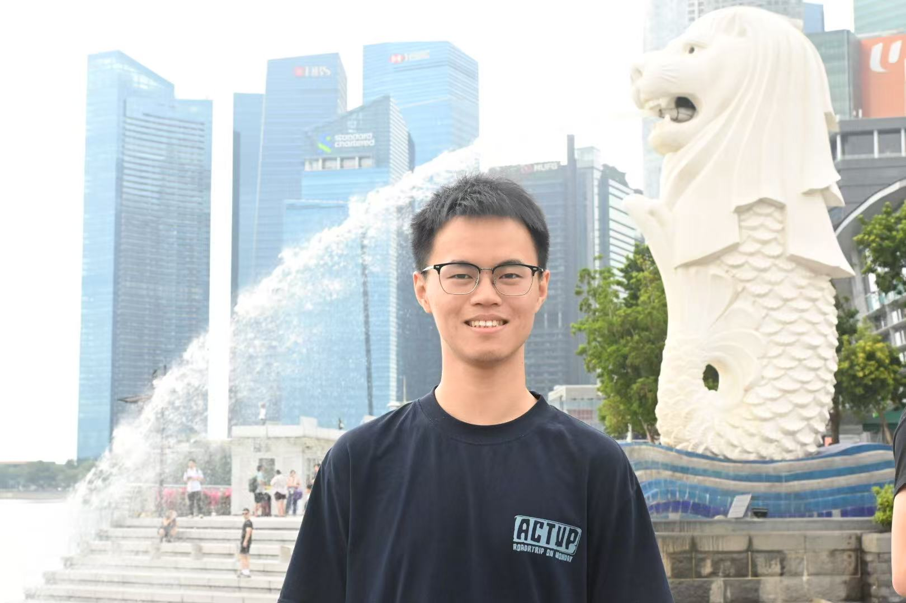
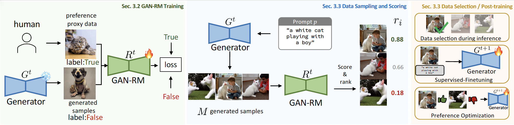
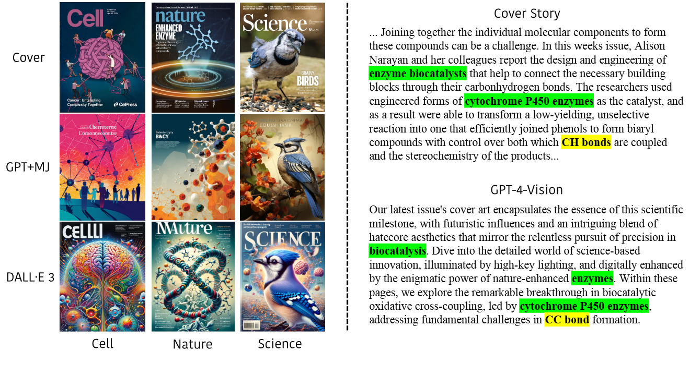
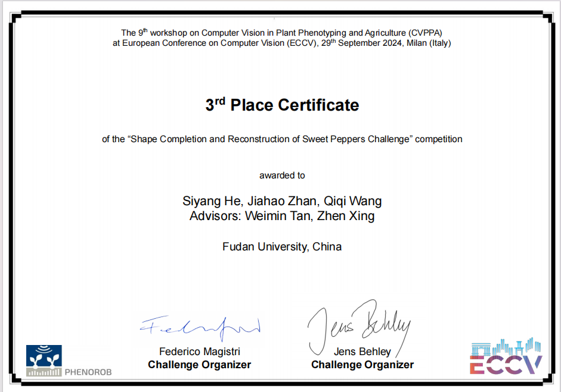
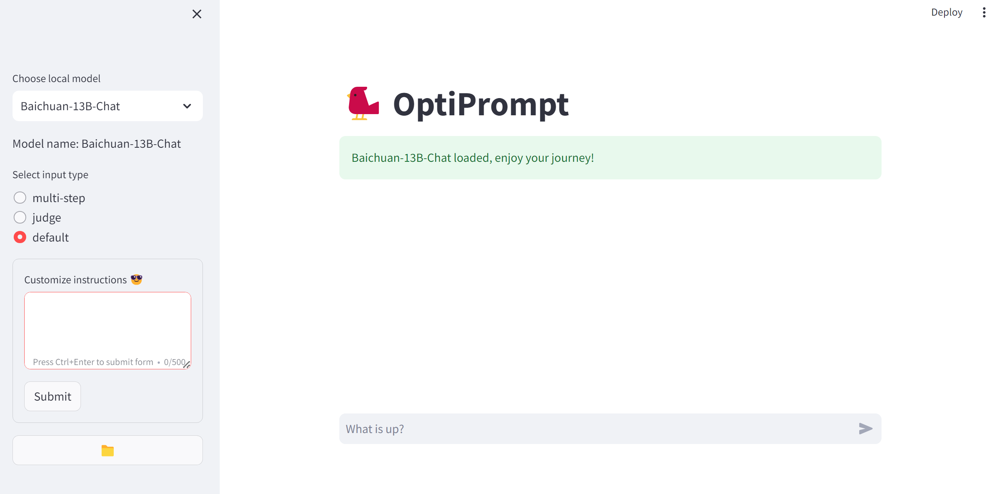
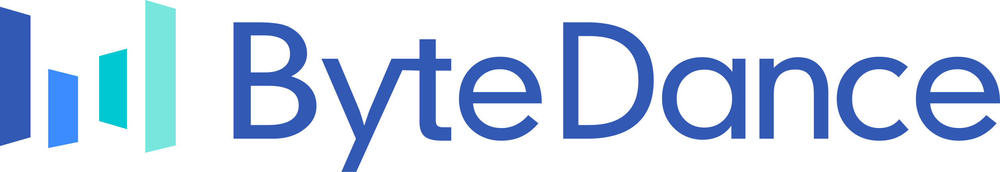

|
Jiahao Zhan 「詹佳豪」 I am a senior undergraduate student at Fudan University, majoring in Artificial Intelligence. Currently, I am a research intern at CUHK MMLab, advised by Tianfan Xue, and an intern at ByteDance. In past years, I had the pleasure of collaborating with Dequan Wang at Shanghai Jiao Tong University, Hang Zhao at Tsinghua University, Qifeng Chen at HKUST, and Jiajun Wu at Stanford University. Email / CV / Google Scholar / Github |
 Hover over the photo 👆 |
{kind=link}
ResearchI'm interested in leveraging generative models as neural simulators, including improving the physical realism of video models and enhancing their memory capabilities. Some papers are highlighted. |

|
PerpetualWonder: Long-Horizon Action-Conditioned 4D Scene Generation
Jiahao Zhan*, Zizhang Li*, Hong-Xing Yu, Jiajun Wu CVPR, 2026 project page / arXiv / github A hybrid generative simulator enabling long-horizon, action-conditioned 4D scene generation from a single image via a unified representation that links physical state and visual primitives. |
|
 |
Fake it till You Make it: Reward Modeling as Discriminative Prediction
Runtao Liu*, Jiahao Zhan*, Yingqing He, Chen Wei, Alan Yuille, Qifeng Chen arXiv, 2025 arXiv / github An efficient reward modeling framework inspired by GANs that eliminates manual preference annotation, training through discrimination between target samples and model-generated outputs. |

|
Generalizing Motion Planners with Mixture of Experts for Autonomous Driving
Qiao Sun*, Huimin Wang*, Jiahao Zhan, Fan Nie, Xin Wen, Leimeng Xu, Kun Zhan, Peng Jia, Xianpeng Lang, Hang Zhao ICRA, 2025 project page / arXiv / github A scalable motion planner using ViT encoder and MoE causal Transformer that generalizes better across different driving scenarios. |
|
 |
MAC: A Live Benchmark for Multimodal Large Language Models in Scientific Understanding
Mohan Jiang, Jin Gao, Jiahao Zhan, Dequan Wang COLM, 2025 arXiv A live benchmark leveraging 25,000+ image-text pairs from top-tier journals to evaluate MLLMs' cross-modal scientific reasoning. |
Projects |
|
 |
Shape Completion and Reconstruction of Sweet Peppers Challenge (ECCV Workshop)
The Third Prize |
|
 |
Intel LLM-based Application Innovation Contest (Team Leader)
Press conference The Second Prize |
Research Experiences |
|
 |
Bytedance MMlab Nov. 2025 - Present Algorithm Engineer Intern, mentored by Qunliang Xing and Shijie Zhao |
|
Stanford Vision and Learning Lab Jun. 2025 - Nov. 2025 Research Intern (UGVI), advised by Prof. Jiajun Wu |
|

|
HKUST Visual Intelligence Lab Jan. 2025 - Jun. 2025 Research Intern, advised by Prof. Qifeng Chen |
|
Shanghai Qi Zhi Institute May. 2024 - Jan. 2025 Research Intern, advised by Prof. Hang Zhao |
|

|
Shanghai AI Lab Mar. 2023 - May. 2024 Research Intern, advised by Prof. Dequan Wang |
|
Website template from Jon Barron. |